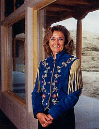

|  | A Committment to YOUR Satisfaction |
Debby Warrick began her custom home business after she and her husband built their own home in Corrales, New Mexico 28 years ago. In 1991 she built her first and only model home. She's been working on referrals since then. Debby's successful attitude is that, while she really enjoys working with clients, and with their plans and ideas for their dream home, she considers it her house until they move in.
Debby focuses on the details of your new home. She wants it to be as thoughtfully designed as YOU want it to be, so included in your package is an outside architect or designer who will work with you and Debby to design your dream home. To make sure your project stays on track, Debby will carefully review and schedule each step of the building process.
Debby works on only one project at a time so the construction of your home is her only concern. This means total access to Debby to discuss options, ideas or possible changes, even for fine-tuning after you move in. Debby is there for you every step of the way.